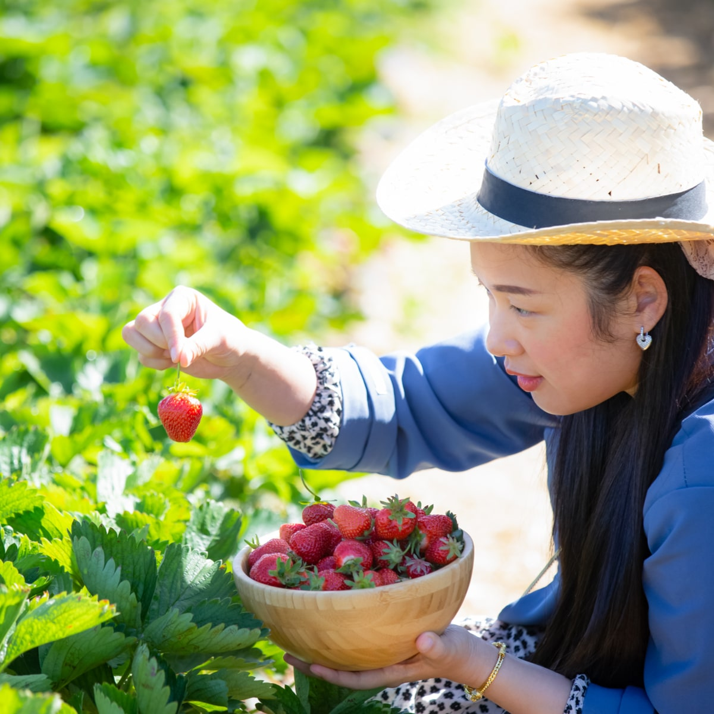
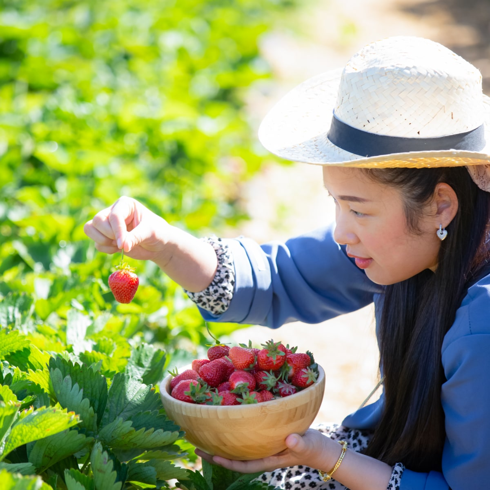

Strawberries are Delicious and Highly Nutritious.
100% Organic, vivid varieties of Strawberries grown in Delhi, Haryana, Punjab and Rajasthan.
ABOUT US
We are a group of people with decades of experience in growing and selling strawberry. We know what a good strawberry looks like and how they are grown. This essential fruit requires a temperate climate, loamy soil that is rich in organic matter apart from needing proper drainage and aeration facilities. Strawberries are good for your whole body. They naturally deliver vitamins, fiber, and particularly high levels of antioxidants known as polyphenols without any sodium, fat, or cholesterol.The main factor which influence temperate fruit bearing trees is soil, climate and environment which are highly favorable and unparalleled in the province of Delhi and Punjab. strawberry a unique look, taste, flavor, size and color.
 

VARIETIES
Chandler
The Chandler strawberry is a June-bearing strawberry cultivar from California known for its large berries that grow well in hot southern climates.

Tiogar
Strawberry Tioga is a vigorous growing variety that produces large sweet Strawberries from late Spring through till late Summer.
Belrubi strawberry
Buds on Belrubi strawberries appear in the first half of June. When grown in the middle lane, flowering occurs ten days later than in the south.
Pajaro
Pajaro are vigorous plants that produce high yields of delicious fruit throughout the summer season. This is variety of desserts or as nutritious and great tasting snack.
Bubbleberry
Named “bubble berry” for its clusters of red raspberries that look like bubbles with their large carpels It is ornamental and elegant species in a genus that, although productive and delicious, is often lacking in beauty.
Torrey strawberry
Strawberry, Torrey, is an old Californian variety. It is a vigorous grower with good colour and is a very tasty Strawberry. A good choice for warmer climates
OUR SERVICE

Fresh
We deliver fresh strawberries with a 100% guarantee of freshness and chemical.

Fast
We deliver your orders as fast as possible, delivery procedure begins as soon as strawberries are plucked from tree.

Satisfying
We guarantee 100% customer satisfaction. We do our best to make your purchase experience smooth.